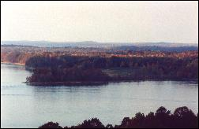

|
|
Town of the Week
Morehead, Kentucky Imagine that, someone from our Town of the Week just happens to be in the live studio audience. Listen in to see if Jim Packard has all the latest info on Morehead, Kentucky. Problem listening to Real Audio? Get Help! Among the forested hills of eastern Kentucky, hawks float on the thermals, and swallows seeking insects skim the ground. If you like sailing and rock climbing, this town has lots to offer. It's the home of the first night school in the country, Morehead, Kentucky. The community carries the name of the late Governor and united states senator James Morehead. Organized in 1817 as Triplett, the town changed its name when it became the seat of Rowan County in 1856. It was Cora Wilson Stewart who organized the night school, and you can still visit that building. After a lengthy town feud resulted in the gunshot deaths of many Tollivers, Martins, and Logans. A former Confederate General gave $500 in the late 1880s to start a college in the hope that education would bring an end to all that gunplay. That college became Morehead State University. With the completion of I-64, the town was transformed from a sleepy college town to a regional shopping and medical center, St. Clare's. The two institutions bookend the town, and provide for its future growth. Eight thousand acre Cave Run Lake provides the sailing, while the Lakeview Ridge Trail provides the hiking opportunity. Among the town's most colorful assets is the Kentucky Folk Center on West First Street, with its collection of walking sticks and gourd creatures. Then it's off to the Dixie Grill for a traditional meal of beans and cornbread in our Town of the Week, Morehead, Kentucky.
Town of the Week
.
Interview
.
Monologue
.
Memos
The Show . Features . Quiz . Poll . Shop . Speak Up . Search |
|||||||||||||||||||||